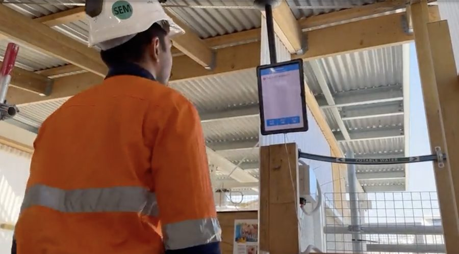
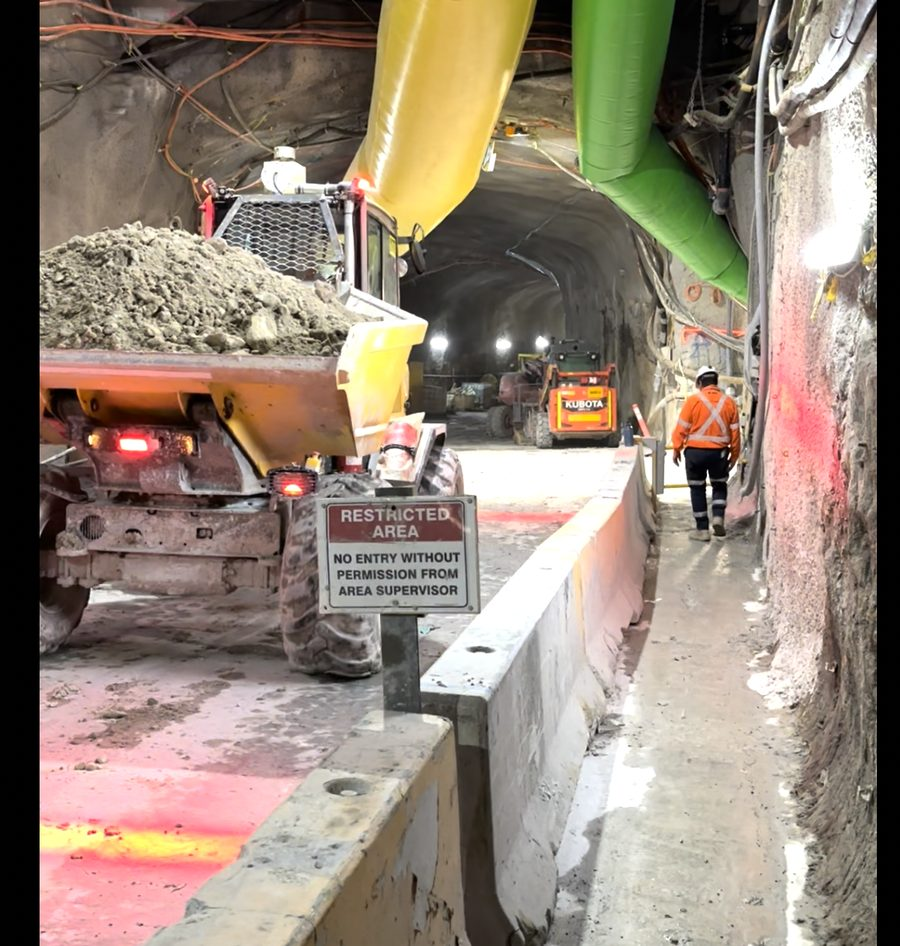
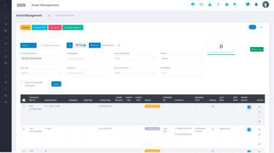
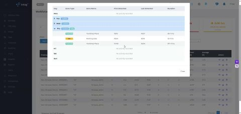
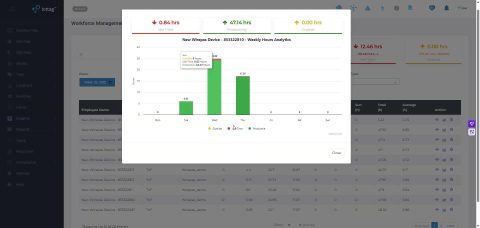

Asset & supply chain visibility
Understanding Critical Assets, Materials And Resources Across The Operation
Complex operations depend on thousands of assets, tools, materials and resources being available at the right time and in the right place.
When visibility is limited, teams lose time locating equipment, verifying availability, managing materials and coordinating work.
iottag helps organisations create a live understanding of asset and supply chain activity, supporting better planning, coordination and operational readiness.
Asset visibility
Understanding where critical assets are located is essential to operational control.
The platform helps organisations monitor:

Equipment

Tools

Materials
Containers

Mobile assets

Critical resources
This supports better coordination, reduced search time and improved operational awareness.
High-volume asset tracking
Large projects and industrial operations may involve thousands of moving assets.
iottag supports high-volume asset visibility across:
Workfronts
Laydown areas
Warehouses
Storage areas
Operational zones
Transport routes
This helps teams maintain control across large and complex environments.
Supply chain visibility
Material and equipment movement directly influence operational performance.
The platform can help organisations understand:
This provides a clearer understanding of how supply chain activity supports daily operations.


Bom & work package visibility
Project delivery depends on materials being aligned with work requirements.
The platform can support visibility of materials and assets against:
This helps teams understand whether the right materials and resources are available when required.
Laydown area management
Laydown areas can become difficult to manage as materials, equipment and contractors move across a site.
iottag helps organisations understand:
This supports better planning and more efficient site execution.

Asset utilisation &
operational readiness
Visibility into asset utilisation helps teams understand whether critical resources are being used effectively.
The platform supports visibility into:
This helps organisations improve efficiency and reduce operational delays.
Asset visibility
in context
Assets and materials influence workforce activity, production performance and project delivery.
By connecting asset visibility into the Operational Digital Twin, organisations gain a clearer understanding of how resources support or constrain operational performance.

Improve asset visibility and operational readiness
Understand where critical assets, materials and resources are located and how they support operational performance.